这一个星期下班回去后，脑子总是乱糟糟的，总在想公司的事，静不下心来做些事或者看点东西。这些文字既是写给你们看的，也是写给我自己，让自己心安的。
- 职场基本技能
在前东家的时候，我经常抱怨那些刚毕业的小学妹提交给我的Excel表格“太丑”，之后我建议财务给公司的员工普及一些基本的excel使用技巧。那些表格是需要我去看并且做计划执行的，它不是冰冷冷的给机器处理的数据，我需要它简洁明了容易操作（好看些）。在我刚入职场的第一家公司是有基本的office软件使用培训的，当然大公司里通常也会有几个特别精通office软件使用的人（当然一般一个人可能就精通word，excel或者powerpoint的其中一样）。掌握一些基本office软件使用技能是职场的基本素养，也是到任何一家公司去都适用的知识。
office软件的使用教程，网上随便搜一下就能找到一大堆。这里放一个知乎关于excel使用的连接给大家感受一下被我们忽视的Excel强大https://www.zhihu.com/search?type=content&q=excel
文档管理
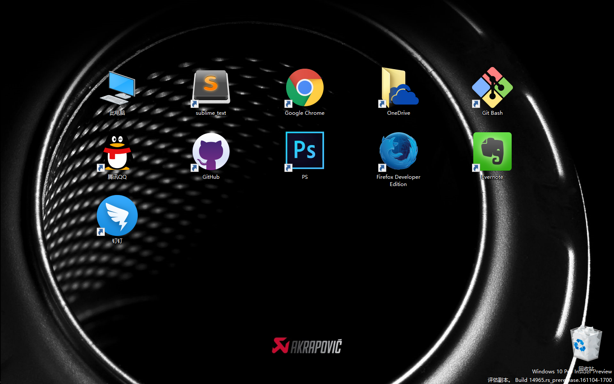
这是我的桌面，同事看到会说：好酷。当然我这样做肯定不是为了酷，而是为了方便以及专注。桌面上这些软件当然不可能就是我所有的软件，只是我经常需要打开关闭的软件。Office软件，当你点击鼠标右键的时候会出现新建word，excel，powerpoint等等文件，那么它的快捷方式就没必要出现在桌面上。例如解压软件，pdf阅读器等软件会在特定事件触发的软件也没必要出现在桌面上。微信以及翻墙用的shadowsocks软件会在开机自动启动并且我之后不会去管它的软件也没必要存在桌面上。有些软件很少会用但是有些总是需要的直接win键从程序列表里打开就好。
这里有个手动设置开机自动软件的小技巧，因为有些软件，例如shadowsocks这个小飞机是没有开机启动选项的，但是我们又想它在每次开机时自动启动该怎么做呢？拿shadowsocks举例
- 找到软件安装目录
- 双击exe格式的软件图标，看能不能打开软件，如果能进行下一步，如果不能说明点击的图标不对继续找其他图标点击
- 关闭软件，右键点击上一步的图标选择发送到桌面快捷方式
- 进入C盘，搜索框搜索：startup
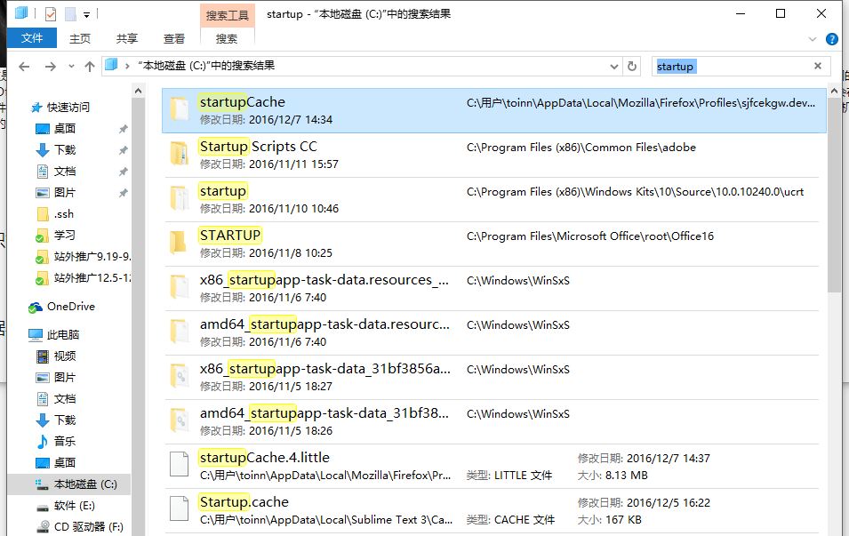
选择有“用户”路径名的文件夹打开，我的是排在第一个，你的可能并不在第一个。
- 将刚刚放在桌面的快捷方式拖进这个文件夹就ok了，下次开机时就会自动启动。
文件管理，我们为了方便肯定会把一些文件暂时放在桌面上就像现在我的桌面一样
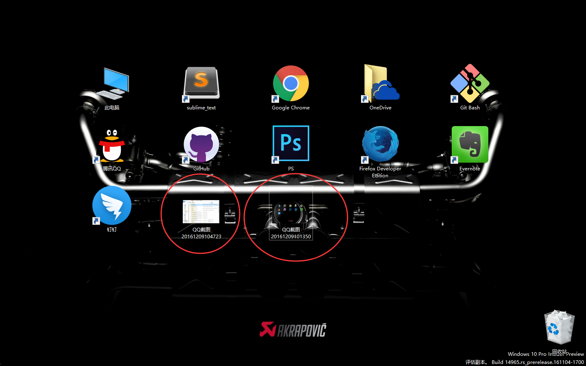
现在我的桌面多了两个为了写这篇文章暂时放在桌面的截图，当我写完这篇文章或者快下班时这些暂时放在桌面的文件我肯定是会归档的。有些实在没什么用以后不会追溯的文件一般我会删掉，但是如果可能以后哪怕有一点可能会追溯的文件我都会选择归档。看到我桌面那个Onedrive文件夹了没，我在那里面存放我所有的文件（当然你也可以选择其它方式），存在云端，即使我电脑出问题了，或者我想要换电脑或者移动办公在家办公都能实时同步。现在打开文件夹看看：
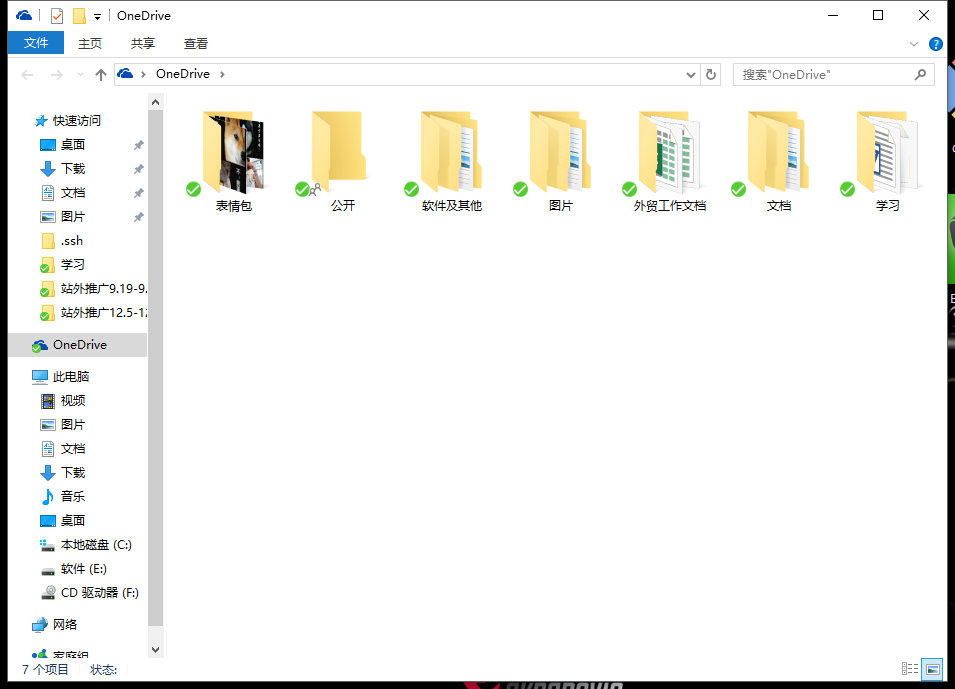
我所有的工作文件都存在外贸工作文档里，其实我这里的文件夹组织方式并不太好，可以优化的更好些。现在打开外贸工作文档：
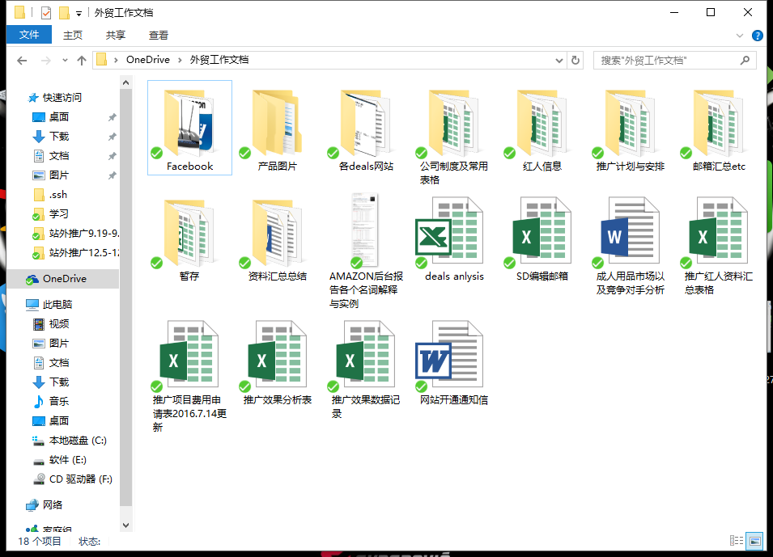
可以看到其实组织还是比较乱的（尴尬），常用的表格模板放在外面。最近公司的请假条，费用申请单之类的文件我都放在了公司制度及常用表格里。每天会需要归档的文件我放在推广计划与安排里。现在打开这个：
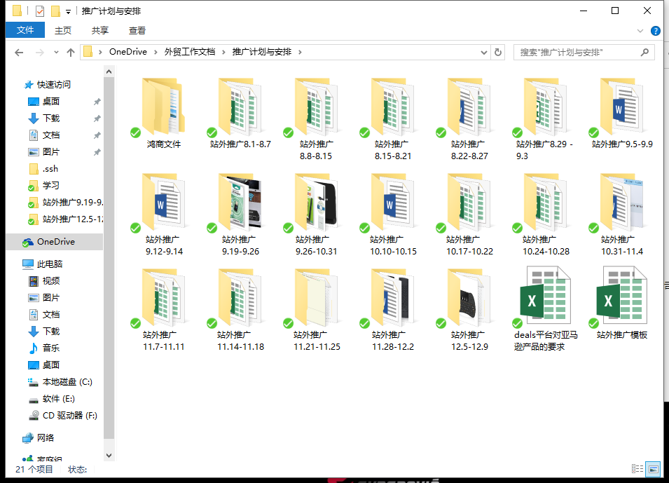
我是按星期来组织文件的，每天下班前会把桌面上所有的文件都归档到文件夹里。打开最近的一个及之前的一个：
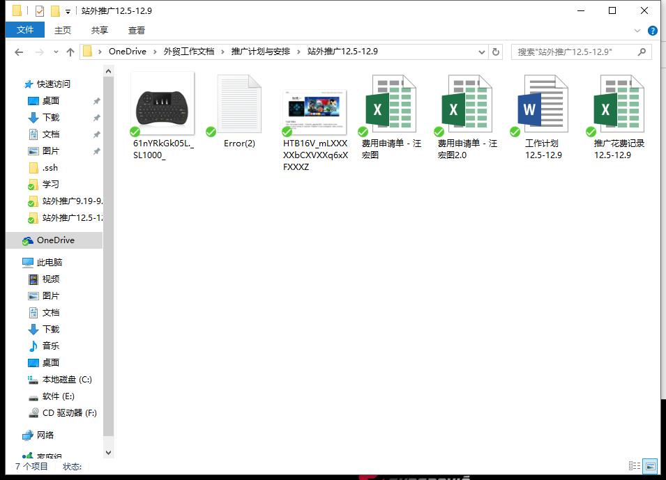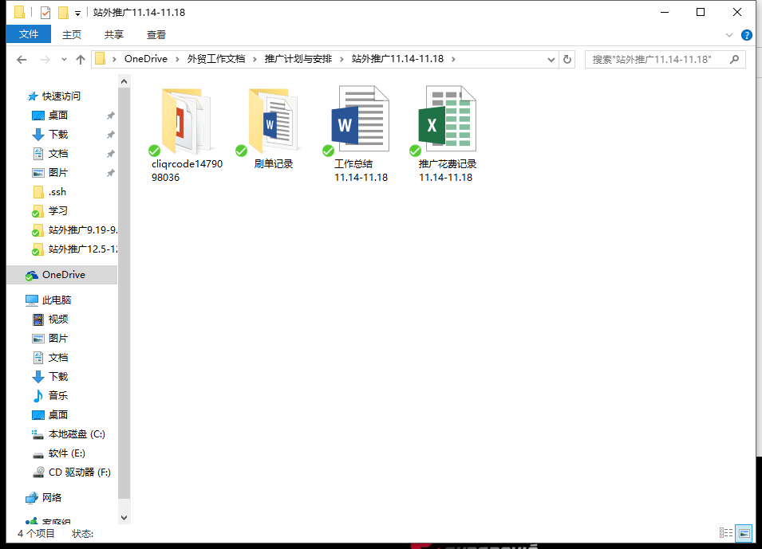
每个星期的文件该怎么组织看自己怎么方便怎么来。这星期的文件夹里，我并没有在里面再建文件夹。之前的我建了一个刷单记录，因为刷单记录文件较多且特殊。
到下星期时我会直接复制这星期的文件夹，然后改一下日期，里面有些文件是需要复用的例如推广花费记录以及工作计划，其它的不需要复用的我都会删掉。
这样的文件管理方式是我自己舒服并且实用的方式，没必要照着我的来做，但是学会管理文档是必须的。
文件命名，学前端时，老师说他们的图片命名方式试过了几种方法，之前是用图片代表的意思去命名，例如这张图片里是个小狗，那我就命名为dog，但是后面人用的时候发先找起来用起来并不方便，毕竟有些图片不同的人对内容的解读不一样。最后决定按大类来分，ico，img等后面直接接数字，多一张后面加1就好。
我们命名文件肯定不能这样，例如请假excel模板，我们命名可以这样：请假单-汪宏图161208。文件类型+名字+时间，非常直观明了。最主要是方便以后追溯。当我们要找一个文件时，可以直接再搜索框里搜，你可以搜请假单，可以搜自己名字，可能你都不记得什么文件了，只记得一个大概的时间例如那个文件是今年10月的你可以搜：1610。也能找到你想要的文件。
当然那么多类型的文件不可一概而论，例如发给美工的图片要求，可能我并不关心是什么时候做的，我更关心那个图片对应的是哪个Asin，那可以把时间改成asin码。
- 知识管理
这里推荐Evernote，在网上看到一篇好文章或者什么奇淫技巧，一开始我也选择将网页收藏为书签：
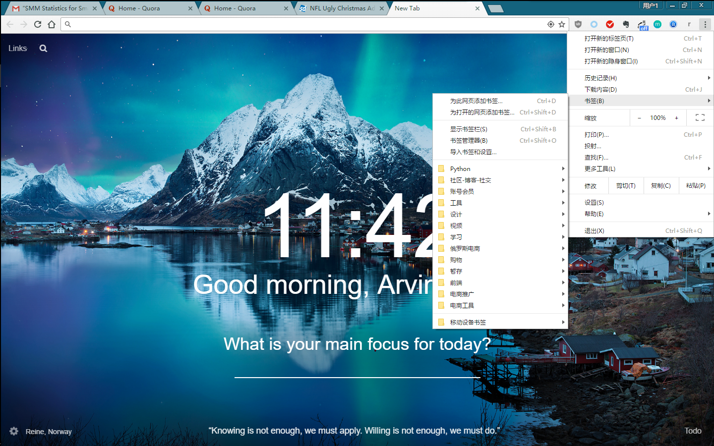
.png)
为了不让保存的那么多网页乱成一锅粥，我在文件夹里又分了文件夹。但其实我们很多时候并不需要保存这个网站，只是想保存里面的内容而已。这时候Evernote的Clip插件简直是神器。就随便找了顾小北的一篇文章演示一下，点击chrome上的Evernote插件：
.png)
它会自动截取你想要的网页正文内容。来看看在Evernote里它是什么样：
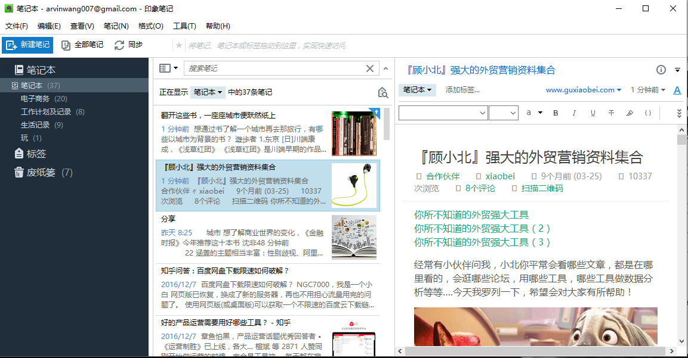
现在它同步到我们的Evernote里了，这个时候你可以给它加标签，如果暂时没时间可以之后再加也没事，我在这会给它加这些标签：电商，工具，汇总。当然你可以不必这样，看你自己如何组织文档了。Evernote也会根据你以往的操作智能的自动加一些标签上去。之后如果文档多到一定程度，我就会去整理，这篇我我就会把它放到电子商务里。Evernote强大的另外一个方面在搜索上，智能匹配你的搜索，可以根据特定标签整理出一些你想要的文档合集。Evernote的知识笔记组织方式很多，自己上网搜能找到很多人的攻略。
我用Evernote也不久，之前用Microsoft的Onenote，但是用的频率很少，现在知道了，它不适合我。有人对Onenote和Evernote做了一个很形象的比喻：如果你的桌面（非电脑桌面）井井有条那就用Onenote，如果你桌面上的东西摆放比较随意那就用Evernote。
Evernote还有个强大的地方，也是我之后想推广到全公司用的团队协作功能。实在不喜欢把一些文件相互传来传去，浪费时间整理。
平时需要记录的一些网站或软件的账号密码也可以放里面防止自己忘了。
还有事件提醒功能。《运营之光》的作者对于运营工具的见解：
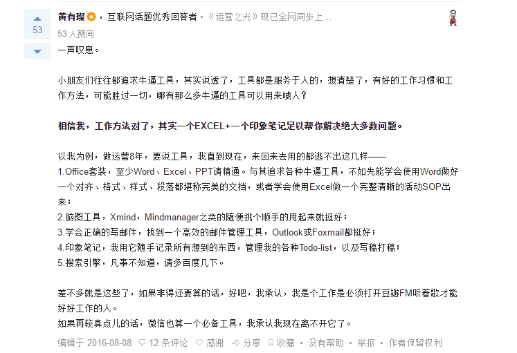
另，我会把电子商务笔记（里面是我在网上看到的一切关于seo，sns值得收藏阅读的内容）共享给你们。
这只是个工具，我观察过包括我自己大家都有收集癖，只要是好东西不管自己是不是能用的着先收了再说。我们看的那么多经验帖，那么多攻略，只有自己去实践了，踩过坑了那些知识和经验才是自己的。
苹果发布会最让人期待的是最后乔布斯说的“One more thing”，我们也应该根据最自己感兴趣的领域做的更深入更专业点。就拿邮件营销举例，如果以后有人问你亚马逊运营，你回答了基本的经验，最后你还能加一句我邮件营销做的比较有经验。我群发的邮件里美国东西部相对而言有更高的点击率，可能那边老旧电脑更多很多台式机需要加wifi adapter加速电脑上网速度。德州我测试过两种不同的内容偏向，其中一种比较官方的语气与内容，另一种比较逗逼和随意，明显后一种点击率要更高，可能是因为大德州人民都比较粗犷吧！当这个属于你的“One more thing”说出来，肯定能给你加分不少。
- 数据
不忘初心方得始终。公司的目标是赚钱壮大，团队的要求是高效的执行力。流程化管理不是目的，只是手段，让团队更高效运转起来才是目的。经常有在大公司的人抱怨什么都流程化缺乏灵动性，一切以KPI以数据为核心导致急功近利，为了绩效不择手段，甚至对数据弄虚作假！我们需要的是让沟通便捷，工作高效，数据透明，反馈及时，文件责任可追溯的流程，大公司的那一套只是我们借鉴的一种方案。
可以关注一下阿里巴巴专为中小公司推出的沟通工具：钉钉。已经有很多公司在用了并且反响很好，我们可以尝试用它来让流程化变得更加适合我们。